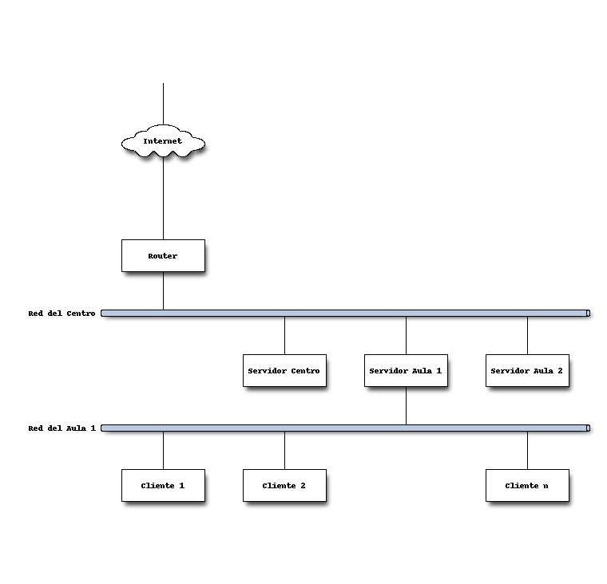

Principios
La meta principal de LliureX es proporcionar la mejor herramienta informática posible para dar soporte a la comunidad educativa.
Partiendo de este ambicioso cometido, y teniendo en cuenta las limitaciones lógicas, se plantean una serie de fines:
- Multilingüe
- Todo el sistema debe estar en las dos lenguas oficiales: valenciano y castellano. Además, debe existir la posibilidad de instalar y configurar otros idiomas (lo cual resulta interesante para el periodo de adaptación del alumnado inmigrante).
- Amplia funcionalidad
- Debe proveer tanto el sistema operativo como una completa colección de aplicaciones (ofimática, internet, audio, video, gráficos, aplicaciones educativas clasificadas por nivel, etc). En el caso de un servidor (de aula o de centro), adicionalmente, proveer de un conjunto de servicios de red útiles.
- Facilidad de uso (y administración)
- El entorno ha de ser amigable, fácil de usar y de explorar. Igualmente, es necesaria una administración sencilla del sistema.
- Compatibilidad
- Compatible con formatos abiertos (PDF, etc ) y propietarios (.doc, .xls, .ppt, etc) para poder trabajar con los documentos elaborados originalmente en MS Windows.
- Software libre
- Todo lo anterior es posible gracias al código fuente abierto, con licencia libre, en el que se puede adaptar, compartir y colaborar en su mejora continua.
El presente manual tiene como objetivo servir de referencia para la instalación, configuración y mantenimiento de la infraestructura de LliureX en un centro docente. Cuando decimos infraestructura nos referimos al menos a un servidor y varios clientes LliureX, bien sea en una sola aula de informática como en varias de ellas y -opcionalmente- con un servidor de centro, dependiendo de las necesidades del centro.
A continuación podemos ver un esquema ejemplo en el que se destaca el aula 1 de informática dentro de la estructura del centro.
